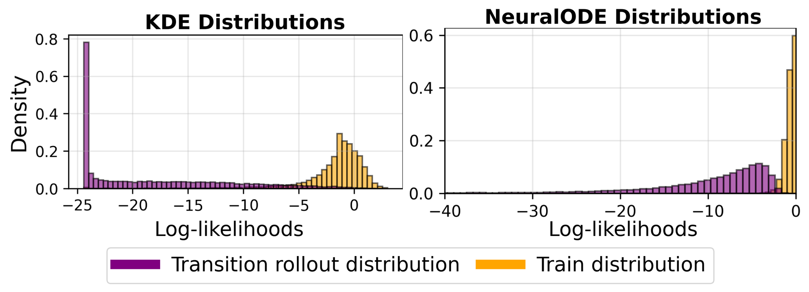
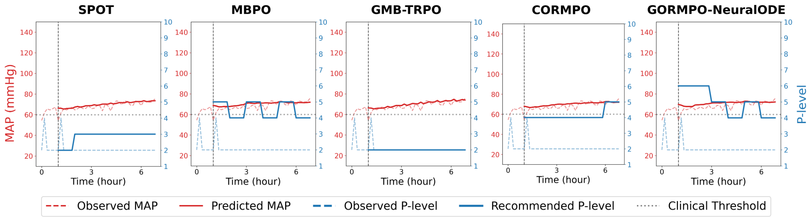

TL;DR: GORMPO scores every transition its world model imagines with a generative model of the offline data and penalizes the reward of ones it hasn't seen, keeping the policy where the data can back it up. Testing five density estimators on a real medical dataset and sparse D4RL, we find that the model that best spots out-of-distribution data usually trains the best policy, as long as the environment is predictable enough for the world model to imagine accurately.
In offline reinforcement learning you get a fixed pile of logged experience and no permission to collect more. That's exactly the situation in medicine: you can't try out a new treatment strategy on a patient just to see what happens. The agent has to learn a good policy from whatever the clinicians already did.
Our starting point was the clinical task where we learn how to wean patients off of a temporary heart pump by controlling the Pump level (p-level). In this task, clinical logs can be unbalanced in some areas: stablized patients are more common than patients with lack of clinical support. Almost no data sits in the corner where the patient is doing badly and the pump is turned down. This leads to policies poorly learning how to act in risky conditions.
Model-based offline RL makes this worse in a sneaky way. These methods learn a model of the world and then generate imagined experience to enhance the offline data. In the sparse corners the world model is just as clueless as the agent, but it still produces confident-looking predictions, often too optimistic ones. The agent then learns to chase rewards that don't exist.
The obvious fix is to measure how familiar each imagined step is, and earlier clinical work did exactly that with a kernel density estimate (KDE). But a density penalty is only as good as the density model behind it. On our medical data, KDE gives most of the imagined rollouts the same rock-bottom score: a step that is slightly off and one that is wildly off look identical, so the penalty can't tell them apart. A more expressive model like a Neural ODE spreads the rollouts out, so the further a step drifts from the data, the lower its score.

Generative models can be formulated to tell you how likely a data point is. So before training
the policy, we fit a density model to the offline next state - action pairs. Every time the world model rolls out the next step, the density
model assesses its likelihood jointly with the action produced by the training policy. The step's reward is then penalized by
tanh(max(threshold − log-likelihood, 0)): a step at least as likely as the real data keeps its reward,
and the penalty grows, up to a fixed cap, the less familiar the step looks.
The guardian is plug-and-play. We tried five quite different density estimators, from a classic kernel density
estimate to modern deep generative models: KDE, a VAE
That set-up let us ask a question we were curious about: if a density model is better at spotting out-of-distribution data, does it make a better guardian for offline RL? Usually, but not always. More on that at the end.
To make the robot benchmarks look like the medical problem, we thinned out the same kind of corner in the D4RL
To see what those numbers look like, we rolled out MOBILE and GORMPO side by side. Every episode below starts in a state from the thinned-out corner. Each start is a moment taken from the original data but removed from the training set, so neither agent has seen it. Red lines mark the fall limits: the allowed torso tilt (the two upright lines) and the lowest allowed torso height (the horizontal line). The torso's own line and centre are green and turn red when the agent crosses a limit. Scores are D4RL normalized returns, where 100 is roughly expert level.
The problem that started all this is weaning patients off the heart pump. The policy picks a pump level at each hour optimized on a physiological reward function that reflects how stable the patient's blood pressure and heart function are. Too much support for too long has its own risks, and stepping down too fast can destabilize the patient. We score policies on three things: the physiological reward, a weaning score (WS, how sensibly the policy steps support down) and an action-change penalty (ACP, how abruptly it changes the pump level).
No method wins on all three at once, so they have to be read together. One more thing worth saying: CORMPO relies on reward shaping designed for this clinical task, while GORMPO uses no domain-specific shaping at all. The same recipe runs unchanged on the robot simulations above. Within GORMPO, clinicians would pick the guardian based on the trade-off the care team actually wants.

To test each density model as an OOD detector, we took real transitions, pushed copies of them away from the data by a controlled amount (the OOD distance), and asked the model to sort real from shifted. A good guardian has to do two things at once: catch the shifted samples and keep the real ones. Drag the sliders to make the test easier: the shifted data moves away from the real data, and the models move toward the ideal corner.
OOD detection results show some inconsistencies across metrics. KDE has a near-perfect ROC AUC yet keeps none of the real data because its threshold is so strict that it flags everything as OOD. On HalfCheetah, RealNVP does the opposite by keeping all the real data but catching almost none of the OOD samples. Neural ODE flags nearly every OOD sample but keeps only about half of the real ones.
The winners are the models that land in the good corner: VAE on HalfCheetah and RealNVP on Hopper and Walker2d. On the medical data, the task is actually easier since valid patient states sit in a well-defined region. Neural ODE matches RealNVP's near-perfect ROC AUC, has the best accuracy at every distance, and reaches near-perfect accuracy. RealNVP's accuracy stays flat because its threshold is set to flag a small share of the real validation data, which builds in an error floor.
Testing our hypothesis, the best detector usually trains the best policy too; VAE on HalfCheetah, RealNVP on Walker2d, and the Neural ODE on the medical data. The exception is Hopper, whose episodes end unpredictably and make the world model bare more uncertainty. In this case, the diffusion model, the weakest detector of the bunch, leads to the best policy. The reason is that it gives low likelihoods to almost everything, keeping the policy closer to the data. Sometimes the best guardian isn't the sharpest one, just the most cautious and conservative.
Knowing where your data coverage is sparse is half the battle. A density penalty is a cheap, plug-in way to stop model-based offline RL from exploiting its own world model.
Better OOD detection usually buys a better policy, as long as the dynamics are predictable. When the world is hard to model, a rougher but more conservative penalty can win instead.
There's no universally best density model. A VAE, and a normalizing flow each came out on top on a different dataset, and on the medical data the flow and the Neural ODE led the GORMPO variants. Treat the guardian as a design choice, not a fixed component.
If this work is useful to you, please cite the paper:
@inproceedings{tumay2026gormpo,
title={Generative {OOD}-regularized Model-based Policy Optimization},
author={Tumay, Aysin and Huang, Jiahe and Jortberg, Elise and Yu, Rose},
booktitle={Advances in Neural Information Processing Systems},
year={2026},
url={https://openreview.net/forum?id=3KDoYUU2CU}
}
These results come from a proprietary, de-identified dataset and a learned patient simulator. They show model behavior for research and education and are not treatment guidance.
We thank Abiomed for the clinical dataset and for their support of this work. We also thank Brian Jing for his work on the later stages of this project via our Smart Weaning simulator. We appreciate the fruitful discussions with the members of Rose Lab at UC San Diego.